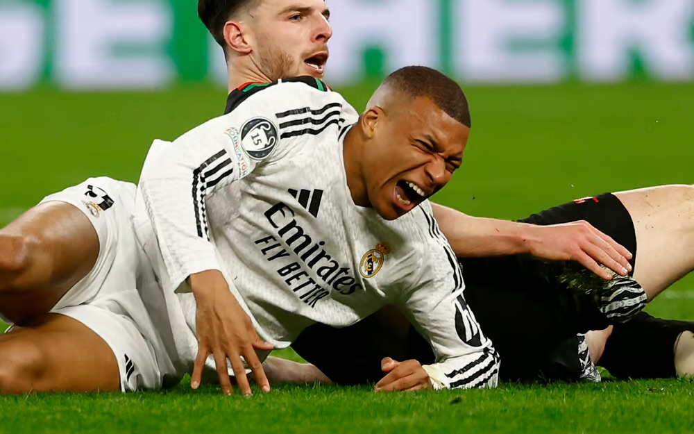
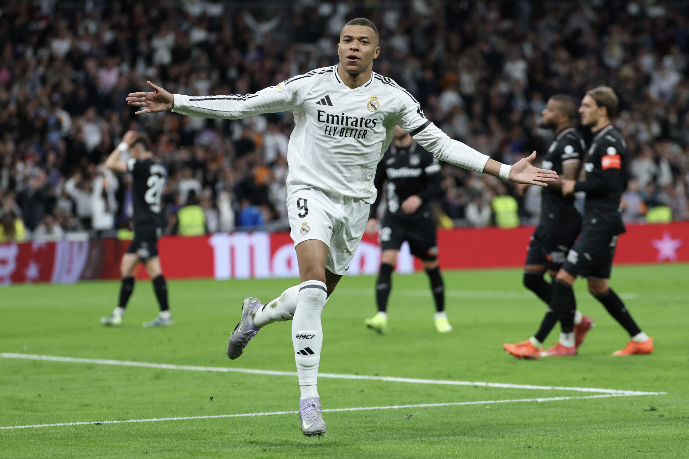

Latest football news, tactical analysis, injury updates and expert match predictions.
View Fixtures & PredictionsAccurate football predictions & tactical previews
View All Fixtures
Real Madrid forward Kylian Mbappé is currently being assessed after suffering a minor muscle issue during training. Early reports suggest the injury is not long-term, but he remains doubtful for the upcoming La Liga fixture. Medical staff are closely monitoring his recovery ahead of the next matchday.
Read Full Story →Elite Football News is an independent football media platform focused on delivering structured and professional coverage of the UEFA Champions League. Our editorial approach emphasizes tactical analysis, match previews, performance breakdowns, and objective football reporting designed for serious supporters.
We analyze team formations, pressing intensity, attacking efficiency, defensive structures, and injury impacts ahead of every major European fixture. Our goal is to provide readers with accurate football insight rather than speculation.
Each fixture is reviewed based on recent form, expected lineups, player availability, and head-to-head data. We examine transitions, build-up play patterns, set-piece efficiency, and defensive compactness to offer realistic match predictions.
Our team monitors official club statements and trusted sports journalism sources to provide reliable injury updates. Squad availability often plays a decisive role in knockout competitions, and we reflect that in our analysis.
All predictions published on this website are analytical opinions based on available data and team form. They are provided for informational purposes only and do not guarantee outcomes.
Professional football analysis, match previews, injury reports and expert predictions.
Elite Football News delivers professional, structured and original football journalism focused on Europe’s biggest competition. We cover tactical analysis, squad depth, injury updates and form trends.

Latest medical update on Mbappé’s knee injury, recovery timeline and impact on Real Madrid.
Read Full Article →